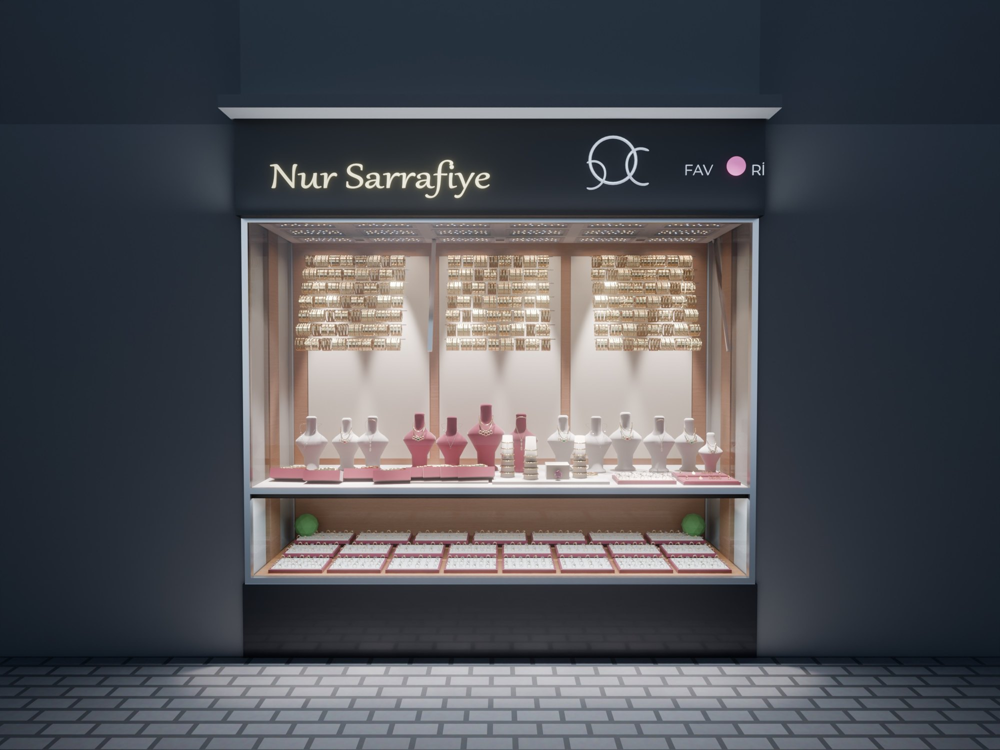
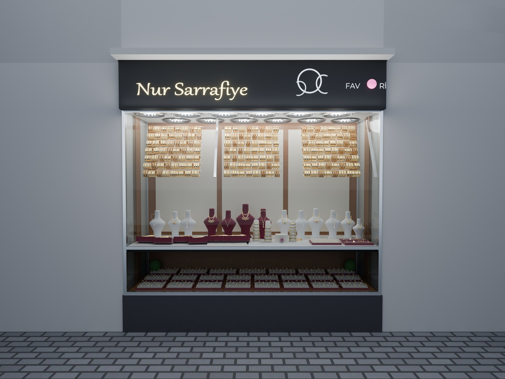
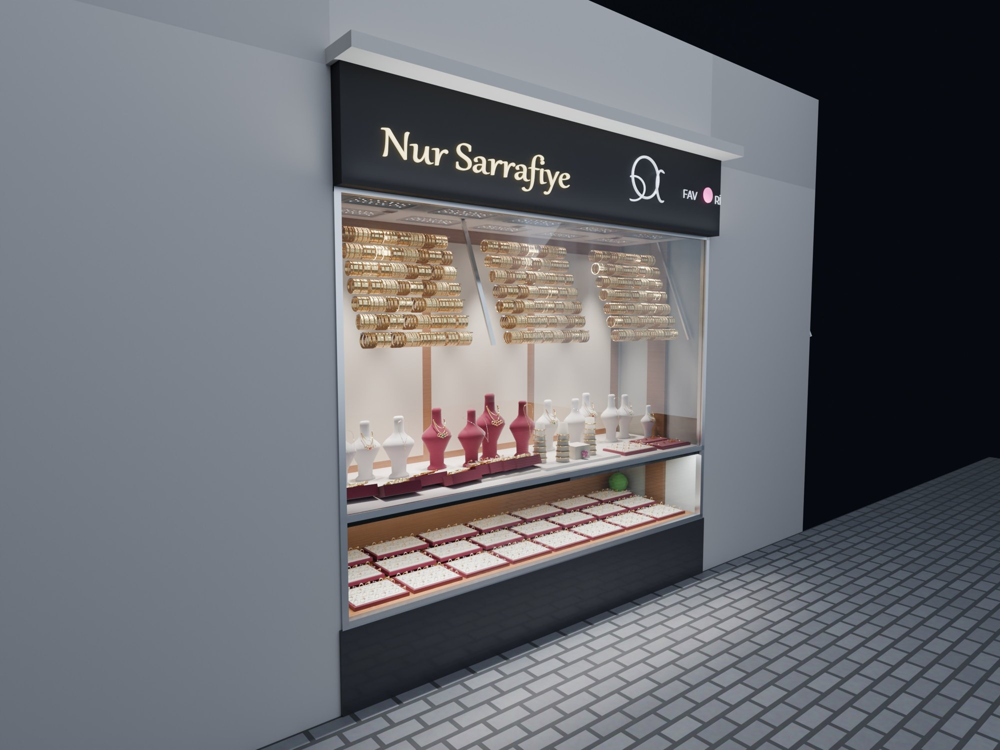
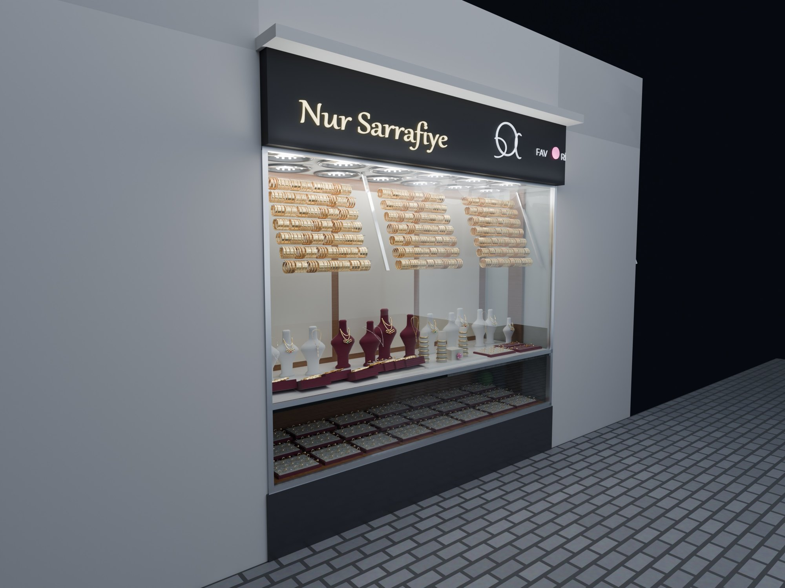
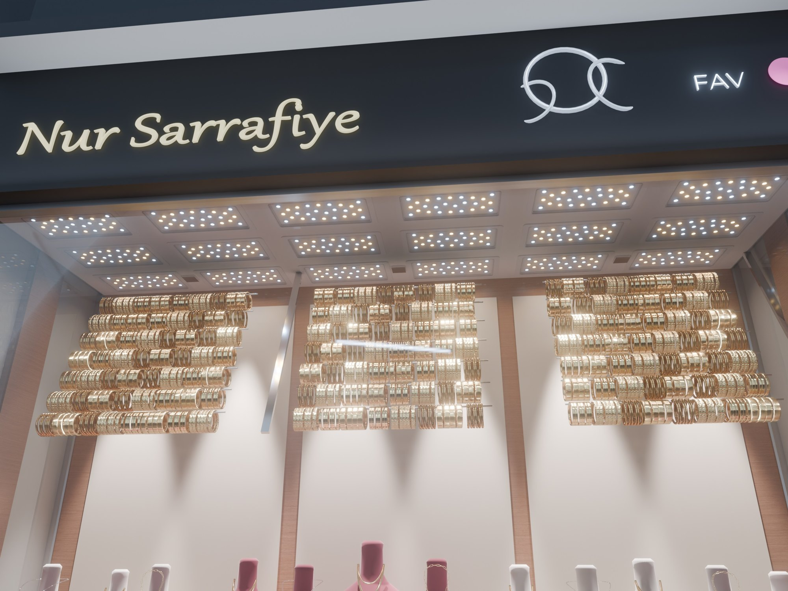
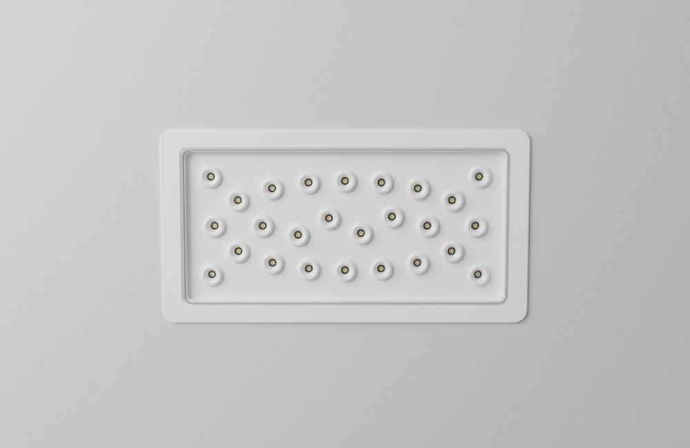
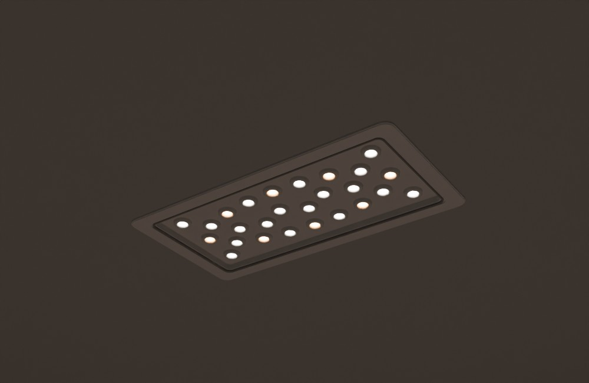
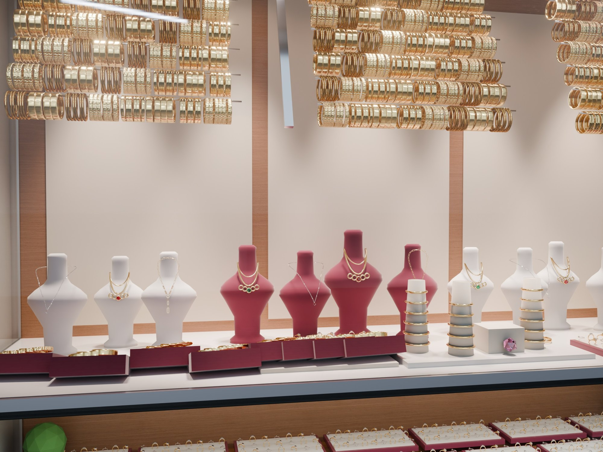
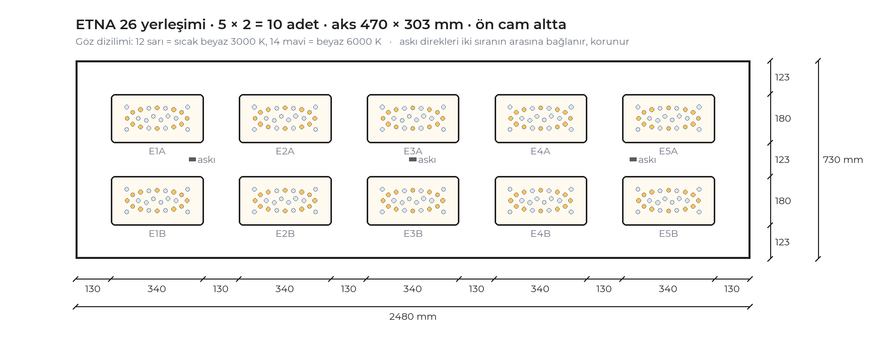

Mevcut vitrin birebir modellendi; yalnız tavan aydınlatması değişti. 10 × ETNA 26, iki renkli göz dizilimi, gizli alt vitrin şeridi.




340 × 180 mm beyaz çerçeve, 320 × 155 kesim, 50 W, 7.788 lm, 38° optik. Her armatürde 8 sıcak (3000 K) + 18 beyaz (6000 K) göz.




Her ürün sırası en az iki armatürden ışık alır; direk gölgesi yok. Alt vitrinde şerit ışığı yalnız yüzük tepsilerinde görünür, kaynağı görünmez.
Sunum PDF, ETNA 26 yerleşim planı ve malzeme listesi tek bağlantıda. Ürünler GMC LED üretimi, 5 yıl garanti.
GMC LED · Quality Light Solutions · gmcled-kuyumcu-tasarimi.github.io/nur-sarrafiye-vitrin